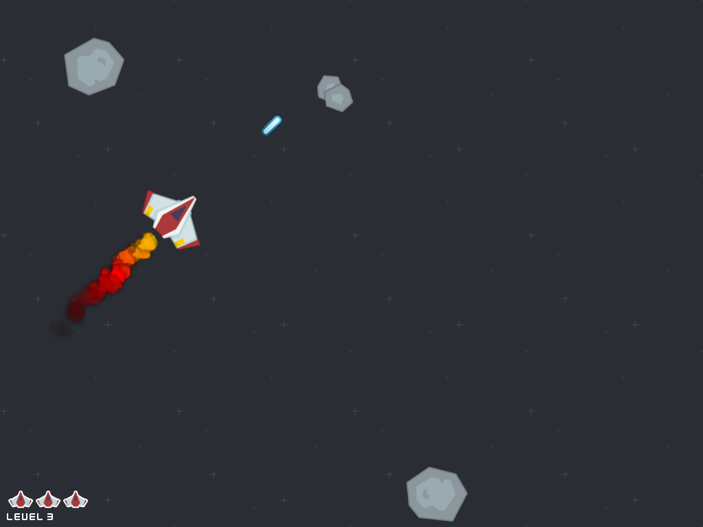

Dnes to všechno – třídy, grafiku, slovníky i seznam – spojíme dohromady do závěrečného projektu. Doufám, že se ti bude líbit!
Zkusíme udělat klon hry Asteroids, která poprvé vyšla na konci sedmdesátých let. V našem podání bude hra nakonec vypadat nějak takhle: 
Projekt je to docela složitý, a – jako většina praktických projektů – využívá i některých věcí, které ještě na kurzu nebyly. Věřím, že ale přesto zvládneš všechno pochopit nebo dohledat!
A ještě jedna věc: protože začátečnický kurz končí, začneme kód psát v angličtině, aby se pak dal sdílet s celým světem.
(asteroids1.py)
Spaceship.
x a y (pozice),
x_speed a y_speed (rychlost),
rotation (úhel natočení),
sprite (obrázek pro Pyglet),
a window (okno, ve kterém se hraje).
tick, která obstarává
mechaniku týkající se lodi – posouvání, natáčení,
a ovládání.
objects. Zatím tam bude jenom vesmírná
loď.
set),
což je datový typ podobný seznamu, jen nemá dané přadí
prvků a každý prvek v ní může být pouze jednou.
(Na množinu se dá dívat i jako na slovník bez
hodnot.)
Pythoní dokumentace obsahuje k množinám
tutoriál i
podrbný popis.
tick.
Sprite-ů, a vykreslovat je jeden po
druhém by trvalo docela dlouho.
Všechny Sprite-y proto přidáme do kolekce
pyglet.graphics.Batch,
kterou pak Pyglet umí efektivně vykreslit najednou.
Do „batche” jde přidávat pomocí
argumentu při vytváření Sprite(),
a odebírat pomocí sprite.delete()
Spaceship
si udržuje vlastní stav, takě není problém jich
vytvořit víc (a všechny ovládat najednou).
Povedlo se? Můžeš létat vesmírem? Čas to všechno dát do Gitu!
(asteroids2.py)
Asteroid.
SpaceObject,
ve které bude všechno to společné, a z ní podědíme
třídu Spaceship, ve které zůstane
kód specifický pro vesmírnou loď (t.j. ovládání
klávesnicí, obrázek lodě, začátek v prostředku
obrazovky).
Spaceship) funkci
stejného jména jako v nadtřídě
(SpaceObject),
zavolá se jen ta z potřídy.
SpaceObject.__init__ z
Spaceship.__init__), můžeš na to
využít speciální funkci super.
Asteroid,
která taky dědí z Spaceship,
ale má svoje vlastní chování:
může mít jednu ze čtyř velikostí,
začíná buď na levé nebo spodní straně obrazovky*
s náhodnou rychlostí,
a ke každému asteroidu se přiřadí
náhodně vybraný obrázek.
objects.
Povedlo se? Máš dva typy objektů? Čas to všechno dát do Gitu!
(asteroids3.py)
circle a pro každý objekt ji zavolat.
SpaceObject.delete,
protože
objects, a pak
zrušit jeho Sprite, aby se už v rámci
batch nevykresloval.
Spaceship.tick projdi
každý objekt, zjisti jestli vzdálenost mezi lodí
a objektem je menší naž součet poloměrů
(t.j. narazily do sebe), a pokud jo,
zavolej na objektu funkci
hit_by_spaceship.
SpaceObject.hit_by_spaceship
by neměla dělat nic.
Ale asteroid loď rozbije, takže
Asteroid.hit_by_spaceship by měla
zavolat delete lodi.
Povedlo se? Konečně se dá prohrát? Čas to všechno dát do Gitu!
(asteroids4.py)
Laser.
Začne na souřadnicích raketky, s natočením raketky,
a s rychlostí raketky plus něco navíc ve směru
natočení.
Laser si pamatuje,
jak dlouho ještě bude ve hře.
Na začátku se tohle číslo nastaví tak, aby přeletěl
zhrube něco víc než jednu obrazovku.
Když dojde čas, Laser zmizí.
tick laser projde
všechny objekty, a pokud se s některým překrývá
tak na něm zavolá metodu hit_by_laser.
U většiny objektů tahle metoda nedělá nic,
jen asteroidy bude rozbíjet.
Povedlo se? Dá se i vyhrát? Čas to všechno dát do Gitu!
(asteroids5.py)
Chceš-li ve hře pokračovat, tady jsou další nápady. Můžeš je dělat v jakémkoli pořadí – nebo si vymysli vlastní rozšíření!
pressed_keys.clear()).
Backgrounds
si vyber pozadí, a vytapetuj s ním celý vesmír.
Laser,
jen nic neničí, a můžou třeba měnit barvu podle
toho, jak dlouho už jsou ve hře.
sprite.scale = 1/10),
přibarvit
(např. sprite.color = 255, 100, 0),
nebo částečně zprůhlednit
(např. sprite.opacity = 100).
Batch
a vykreslit ho před tím hlavním, aby efekty
nepřekrývaly herní objekty.
Ufo
a z Laser podědit
ShipLaser a UfoLaser.
Povedlo se? Vypadá to a chová se to profesionálně? Čas to všechno dát do Gitu!